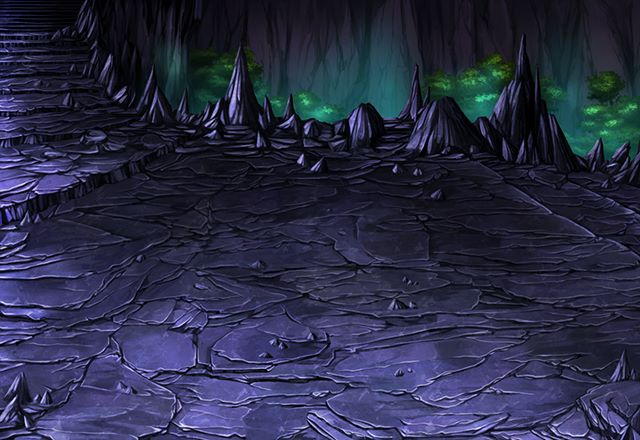

ベイオルグ
前回以上ノ損害ヲ確認 自動強化機能ノ上限ヲ解放……
ルジーナ
今のこいつは、このバカとの戦闘での 敗北を想定していたはず。
ルジーナ
そこに別の強力なダメージを与えれば 自己強化も追いつかねー。
ルジーナ
敗北以上の大敗北を与えてやったんだ。 これで六鎧様も終わりだよ。
ルジーナ
このルジーナ様を敵に回したことが テメーの敗因だ！
パリス
Shou-chan、黙って囮になって もらってごめんなさい……。
ルジーナ
予想通りこいつはまた勝手に 戦ってたんだからな。
セリア
Shou-chan、アンタ、 ルジーナの作戦通りに動いちゃったわね。
ルジーナ
ハン、こいつが俺の作戦通りに動くのは いつも通りのことだろうが。
カル
ルジーナ、最後に油断するとは お前らしくないぜ。
ルジーナ
チッ、ってことは城内にあった 動力源っぽいのを壊したのはお前か。
カル
壊したわけじゃない。 少し動きを止めただけだ。
カル
久々の再会なんだ。 もう少し俺にも話をさせてくれよ。
カル
……Shou-chan、 お前もイシュグリアについに来たんだな。
カル
この先、イシュグリアの調査は 俺１人で十分だ。
カル
もし嫌だって言うなら 力ずくで帰ってもらうことになる。
パリス
カル召喚師、あなたは自分が何を 言ってるのかわかっているの！？
カル
でも、もしまたイシュグリアで 次に会うようなことがあればその時は……
ルジーナ
ケッ、やっぱりテメーはムカつくヤツだな！
ルジーナ
これで堂々とお前をぶっ潰せる理由が できたんだからな！
カル
Shou-chan、 俺はお前とは戦いたくない。
セリア
ちょっと、カル！ 待って！ まだ話は終わってないわよ！
ルジーナ
チッ、ヤツが何を考えてるのか知らねーが お前たちは戻る気なんかねーんだろ？
ルジーナ
だったら、これまで通り、 イシュグリアの探索を続けるだけだ。
ルジーナ
カルの野郎が邪魔してきやがったら 俺がぶっ潰してやるからよ。
ルジーナ
Shou-chan、お前も覚悟しておけよ。
ルジーナ
親友だかなんだか知らねーが、 お前にもしっかり働いてもらうからよ。


フフフッ……。 やっと駒がそろってきたようですね。
モーラ
今度の彼は どんな動きをしてくれるのでしょう？


{kind=link}
{kind=link}
{kind=link}
{kind=link}
{kind=link}
{kind=link}